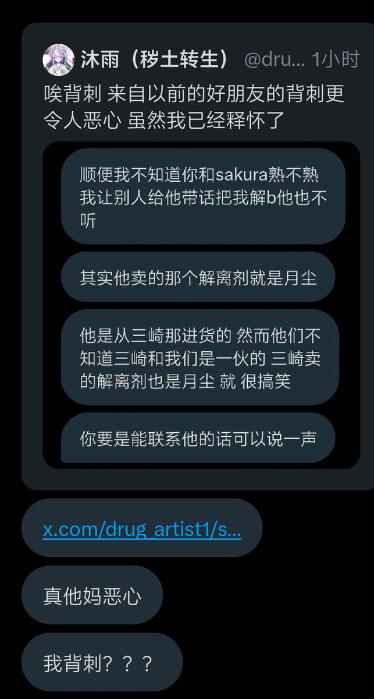
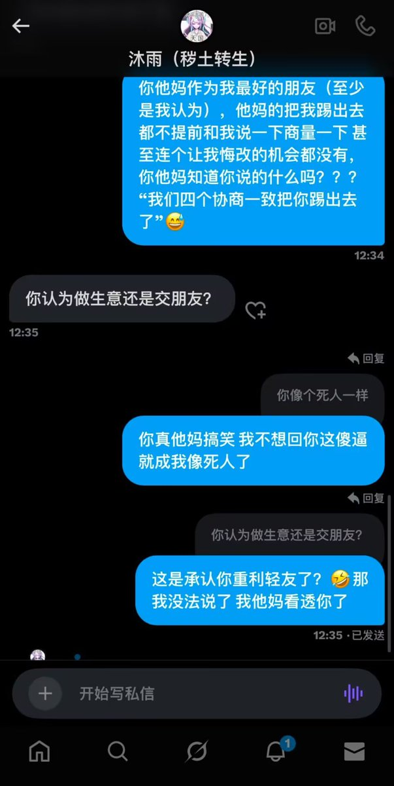

🍊苦橙🍊
@Citrus_amara
为了钱至于吗？小猫他妈的之前这么护着你沐雨，，我服了，，


Overdosewiki
@overdosewiki
证人表示可以将证据全部发出来
这位证人曾是药物百科副wiki主小猫（kitten）
沐雨等人因想要多瓜分一个人的钱而将其一声不吭踢出并找人代替
kitten认为沐雨他们是朋友，而沐雨却说认为做生意还是交朋友，并大言不惭的说：“我甚至打算在你退出后接着给你2成我的分成” https://t.co/ps4xpfYDKM